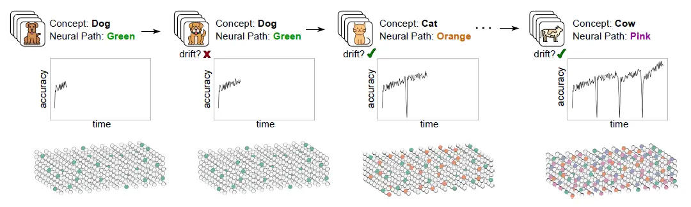
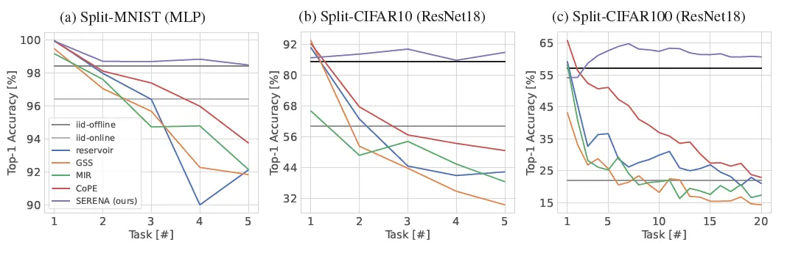
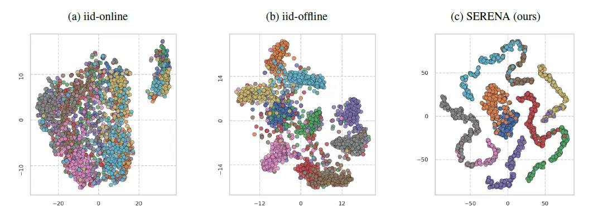

Self-Regulated Neurogenesis for Online Data-Incremental Learning
Self-Regulated Neurogenesis for Online Data-Incremental Learning
Murat Onur Yildirim, Elif Ceren Gok Yildirim, Decebal Constantin Mocanu, Joaquin Vanschoren.
TL;DR: This blog post dives into our recent paper “Self-Regulated Neurogenesis for Online Data-Incremental Learning” (📄 Paper, 🤖 Code) published in CoLLAs 2025. SERENA is a brain-inspired continual learning method that detects concept drift and allocates dedicated sparse neural paths called concept cells for each task, enabling efficient and replay-free learning without forgetting. It outperforms state-of-the-art and even offline supervised training in online data-incremental scenarios. Read on for a brief overview of our key findings 😊
❔ The Problem: AI’s Short-Term Memory
Traditional neural networks are great at recognizing patterns when all data is presented at once. But in the real world, data arrives bit by bit, like a movie watched frame by frame. Most AI systems fall apart here, suffering from catastrophic forgetting, where learning something new erases what was previously learned. Even worse, many current solutions rely on replaying old data (which isn’t always possible due to privacy) or growing the model’s architecture indefinitely (which becomes inefficient fast).
👧🏻 SERENA: Self-Regulated Neurogenesis meets Continual Learning
Our new approach takes its inspirations directly from the brain’s remarkable ability of “self-regulated neurogenesis” to learn and adapt throughout life. It promises to revolutionize how AI handles dynamic, real-world data streams. Specifically, it detects new concepts on its own and carves paths called concept cells which are embedded in a single over-parameterized network, meaning no model growth, no replay buffer. Once a concept is mastered, its corresponding concept cell is “frozen”, effectively safeguarding that knowledge from future interference.

🧠 How SERENA Works Its Magic
SERENA’s design allows it to operate in real-time, online data-incremental learning scenarios without needing explicit task identifiers or multiple training epochs. Here’s a simplified look at its core mechanisms:
Zero-Cost Path Allocation: When a new concept is detected in the data stream, SERENA allocates a new specialized neural path. This is done efficiently using zero-cost random unstructured pruning.
Drift Detection: If the model notices it’s struggling (via accuracy dips), it knows something new is happening and carves a new concept cell.
Knowledge Preservation: After a concept is learned, its dedicated concept cell is frozen, preventing catastrophic forgetting. This means the model doesn’t need to “re-learn” old information but can benefit from the existing knowledge while learning the new ones.
Recency-Effect with Ensemble Inference: When making decisions, SERENA doesn’t rely on a single neural path. Instead, it employs a neuro-inspired ensemble approach, giving more weight to recently acquired knowledge while still integrating past information. This “recency effect” enhances adaptability to evolving data distributions.

🚀 Performance That Surpasses the Best
Across over ten benchmarks, SERENA doesn’t just outperform all continual learning baselines, it even beats offline supervised batch learning which sees all data in advance and gets to train on it many times. Let that sink in: a one-pass, online, biologically inspired method outperforms traditional training.
This is a monumental achievement, as offline learning typically has the luxury of revisiting data multiple times. SERENA achieves this superior performance without the need for storing subsets of data for replay or expanding the network architecture, addressing critical concerns around computational overhead,privacy, and memory limitations, so it is game-changer and highly “Real-World Ready” 🌍.

💡 Final Thoughts and Wrapping It Up
SERENA is more than a clever acronym—it represents a significant leap forward in making AI truly adaptive and intelligent. By drawing inspiration from how our brains learn, it shows that continual learning in AI doesn’t have to be clunky, memory-hungry, or brittle. It can be elegant. Efficient. And maybe… just a little bit human. If you want to know more, you can check the paper 😊
Stay curious, keep exploring, and let’s continue pushing the boundaries of what intelligent systems can achieve! 🧠🚀
This post was written by Murat Onur Yildirim and need not reflect the view of co-authors.